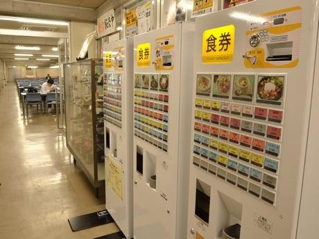
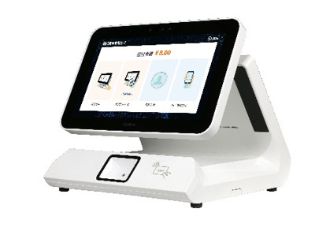
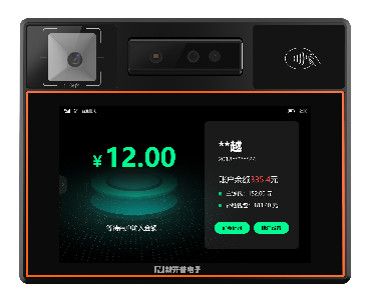

What you'll learn - How the three types of cafeteria payment method (ticket machine, counter payment, auto-checkout) work, and their pros and cons - The differences among the three auto-checkout methods (AI image recognition, RFID, weighing) - How the trends of cashless payment, new-banknote compliance, and labor-saving affect payment methods - 5 checkpoints for choosing a payment method
"We want to make cafeteria checkout smoother." "We want to cut labor but don't know which method fits." More and more corporate general-affairs and facility-management staff face these challenges.
Cafeteria payment methods can be broadly classified into three: ticket-machine type, counter-payment type, and auto-checkout type. Each has strengths and weaknesses, and the best solution differs depending on cafeteria size, serving format, and budget.
This article compares the mechanisms, costs, and operational cautions of the three types, then focuses on the evolution of the auto-checkout type that has drawn attention in recent years. Drawing on our own expertise in providing three auto-checkout methods — AI image recognition, RFID, and weighing — we explain how to decide "which method is best for our cafeteria?"
Three trends surrounding cafeteria payment methods
Before considering payment methods, let's grasp the three trends that are currently having a major impact on cafeteria checkout.
1. Accelerating shift to cashless
In addition to the cashless-payment ratio targets promoted by Japan's Ministry of Economy, Trade and Industry, there is growing demand for a "cash-free cafeteria" as a corporate employee benefit. Considering the costs of handling cash (preparing change, collection, tallying, and depositing), cashless checkout is a major advantage for management departments as well.
2. The burden of new-banknote compliance
New banknotes were issued in July 2024. Machines that handle cash, such as ticket machines, require replacement of their banknote-identification units, and in some cases refurbishment costs of several hundred thousand yen per unit arise. Taking this as an opportunity, the number of cafeterias considering a switch to cashless methods is surging.
3. Demand for labor-saving and unmanned operation
Difficulty recruiting cafeteria staff and rising labor costs grow more serious every year. A conventional operation in which one or two staff are stationed just for checkout is no longer sustainable. Interest is rising in auto-checkout methods that achieve "zero checkout staff."
\U0001F4D6 Related article: For the overall picture of cafeteria labor-saving and unmanned checkout, see RFID vs. AI Image Recognition for Cafeteria Checkout for a detailed explanation.
Payment method (1): Ticket-machine type (pre-payment, meal-ticket issuance)

The method with the longest history, adopted by many cafeterias, is the ticket-machine type.
How it works
Before lining up at the counter, the user selects a menu item at the ticket machine, pays with cash or electronic money, and hands the issued meal ticket to the serving window to receive the food. Because it is pre-payment, there is almost no risk of non-payment or checkout errors.
Advantages
- Lowest initial cost — a simple equipment configuration, easy to introduce in small to mid-size cafeterias
- Easy-to-understand operation — because there is a physical "meal ticket," both users and staff understand it intuitively
- Pre-payment — zero non-payment risk. Also easy to use for meal-count management
Disadvantages
- Queues form easily at peak times — when a user hesitates in front of the ticket machine, those behind get backed up
- Effort of cash management — preparing change and collecting/tallying sales revenue occur as daily tasks
- New-banknote compliance cost — the banknote-identification unit must be refurbished. Without refurbishment, only old banknotes are accepted
- Setup burden when changing the menu — changing button layouts and menu registrations takes effort
- Unsuited to cafeteria/buffet formats — hard to handle serving formats where the portion taken is not fixed
\U0001F4D6 Related article: For the causes and solutions of the queue problem common with ticket machines, see 5 Ways to Eliminate Queues in Corporate Cafeterias.
Payment method (2): Counter-payment type (pre-payment, terminal payment)


Spreading as an approach to ease the ticket-machine queue problem is the counter-payment type.
How it works
A dedicated payment terminal is installed at the serving counter or window, and users pay by holding up their employee ID, QR code, IC card, etc. at the moment they receive their food. Because no cash is handled, fully cashless operation is possible.
Advantages
- Cashless, so no cash management — the costs of preparing change and collecting sales revenue drop to zero
- Employee-ID integration — existing employee IDs and IC cards can be used as-is, so the burden on users is low
- Easy data collection — automatically captures logs of who purchased what and when
Disadvantages
- Terminals must be added per window — costs swell in cafeterias with many windows
- Staff operation may be required — in operations where staff enter menus or scan barcodes, the labor-saving effect is limited
- Unsuited to cafeteria/buffet formats — where the portion taken varies per person, linking items to amounts is difficult
- Checkout speed depends on staff operation — since it is not fully automated, processing speed varies
Payment method (3): Auto-checkout type (automatic recognition, unmanned checkout)

Drawing the most attention in recent years is the auto-checkout type. Simply placing the tray on the checkout stand automatically recognizes the items and amount, and checkout completes without staff involvement.
Its greatest feature is that it simultaneously achieves "fully unmanned checkout" and "support for every serving format" — things ticket machines and counter payment could not fully handle.
However, even within "auto-checkout," the mechanism differs greatly by recognition technology. We provide three methods — AI image recognition, RFID, and weighing — so you can choose the optimal method according to the cafeteria's size and serving format.
\U0001F4D6 Related article: For a detailed mechanism and spec comparison of the three auto-checkout methods, see A Thorough Comparison of Cafeteria Auto-Checkout Systems: Explaining the 3 Methods of AI, RFID & Weighing, which covers them comprehensively.
Auto-checkout method (1): AI image recognition checkout
How it works: An AI camera (5 megapixels) on the checkout stand photographs the food on the tray → image recognition automatically determines items and quantities → the amount is calculated instantly. A server-free edge design mounts the AI engine in the checkout stand itself.
| \u2705 | No special dishes needed — in "food recognition mode," it can be introduced with ordinary dishes as-is |
| \u2705 | Two recognition modes — dish recognition (99.99% accuracy) / food recognition (99% accuracy). Because the number of daily menu items is limited to 10–30, it is nearly 100% in actual operation |
| \u2705 | Same-day support for daily-special menus — just photograph the new menu item with the camera and it learns automatically |
| \u2705 | Checkout speed — item determination and amount calculation complete in about 1–2 seconds |
| \u26a0\ufe0f | Caution — for dishes that look extremely similar (e.g. soy-sauce ramen vs. miso ramen), combined use with dish recognition mode is recommended |
\U0001F3AF Recommended for: corporate cafeterias with abundant daily-special menus; facilities that want to keep using existing dishes
\U0001F4D6 Related article: If you'd like to know the mechanism and introduction benefits of AI image recognition checkout in more detail, see The Complete Guide to Introducing AI Auto-Checkout in Corporate Cafeterias and What Is a Cafeteria AI Register? The New Common Sense of Checkout Transformed by Image Recognition.
Auto-checkout method (2): RFID checkout
How it works: Menu information is recorded in smart dishes with a built-in RFID chip → just placing them on the checkout stand reads them instantly → the total amount of multiple dishes is calculated automatically. Dishes can be reused as-is after washing, and the information can be rewritten at any time.
| \u26a1 | Fastest reading speed — even about 30 items are recognized all at once in 1 second. Nearly 100% accuracy |
| \u267b\ufe0f | Dishes reused as-is after washing — information can be rewritten at any time. Also supports different prices for morning, noon, and evening |
| \U0001F4E6 | Batch writing with an output machine — writing menu information completes in a short time |
| \u26a0\ufe0f | Caution — RFID-embedded dishes are required (higher initial cost). Maximum heat resistance 85°C |
\U0001F3AF Recommended for: large cafeterias centered on fixed menus; facilities processing hundreds to thousands of meals per day
\U0001F4D6 Related article: For the introduction steps of RFID checkout and how to choose dishes, see A Complete Guide to Cafeteria RFID Checkout Systems for a detailed introduction.
Auto-checkout method (3): Weighing checkout
How it works: A tray-bind machine links dishes to the tray → users freely serve themselves buffet-style → the weighing checkout stand automatically bills by the gram. High-precision weighing combining gravity sensing and chip identification.
| \U0001F37D\ufe0f | "Take only what you want" self-service — higher meal satisfaction plus a natural reduction in leftovers |
| \u2696\ufe0f | Weighing accuracy in grams — high-precision weighing combining gravity sensing and chip identification |
| \U0001F4CA | Greatest food-loss reduction effect — visualizes consumption data, directly leading to optimized prep volumes |
| \U0001F50D | Nutrition data analysis — links consumption data with nutritional content to provide personalized nutrition reports |
\U0001F3AF Recommended for: buffet/cafeteria-format cafeterias; facilities that emphasize food-loss reduction
Features common to all three auto-checkout methods
All three methods above come standard with the following common features.
| Common feature | Details |
|---|---|
| Payment methods | Face authentication (infrared dual camera), QR code, IC card — all three methods supported |
| PC management terminal | Centralized browser-based management of menu management, order management, sales reports, and business analysis |
| Edge design | Server-free. The AI engine / processing base is mounted in the checkout stand itself, running even during network outages |
| Security | Face authentication uses an infrared dual camera to prevent spoofing with photos or 3D models |
\U0001F4D6 Related article: If you'd like to know about cafeteria DX in general, please also see An Introduction to Corporate Cafeteria DX: 3 Steps to Break Away from Analog Operation.
Overall comparison table of the three types
Here we compare the content so far at a glance.
| Comparison item | Ticket machine | Counter payment | Auto-checkout (AI/RFID/weighing) |
|---|---|---|---|
| Payment timing | Before eating (meal-ticket issuance) | Before eating (terminal payment) | Before or after eating (automatic recognition) |
| Checkout automation | △ (user selects the button) | △ (staff operation in some cases) | ◎ (fully automatic) |
| Labor-saving effect | △ (ticket-machine management still needed) | ○ (cashless, no cash management) | ◎ (zero checkout staff possible) |
| Checkout speed | 10–30 sec/person | 5–15 sec/person | 1–2 sec/person (AI · RFID) |
| Cashless support | △ (cash-centered, electronic money can be added) | ◎ (employee ID · QR · IC) | ◎ (face auth · QR · IC) |
| New-banknote compliance risk | Yes (refurbishment cost arises) | None | None |
| Buffet support | ✕ | ✕ | ◎ (weighing method) |
| Data analysis | △ (meal-ticket sales counts only) | ○ (purchase logs) | ◎ (item-level sales · nutrition · food loss) |
| Initial cost | Low | Medium | Medium to high (depending on method) |
| Recommended scale | Small to mid-size | Mid-size | Small to large (all scales) |
5 points for choosing a payment method
When the comparison table alone isn't enough to decide, the following five points help narrow down the best method for your cafeteria.
Point (1): What is the cafeteria's serving format?
If it centers on set meals and combo menus, all three types can be used. On the other hand, in cafeterias where users freely serve themselves buffet- or cafeteria-style, the weighing checkout method is optimal. With ticket machines or counter payment, billing according to the portion taken is difficult.
Point (2): How many meals per day?
For small cafeterias serving 300 meals or fewer per day, ticket machines or AI image recognition can fully cover it. In large cafeterias exceeding 1,000 meals per day, the processing capacity of the RFID method — which can read 30 items in 1 second — becomes a major advantage.
Point (3): How often does the menu change?
In cafeterias with abundant daily-special menus, the effort of menu registration influences the choice of method. With the AI image recognition method, you can respond same-day just by photographing the new menu item, making the operational load lightest. For fixed menus, batch writing with the RFID method's output machine is also efficient.
Point (4): Do you want to keep using existing dishes?
If there are constraints on replacing dishes, the AI image recognition method (food recognition mode) is optimal. It can be introduced with ordinary dishes as-is, with no need to purchase special dishes. The RFID method requires dedicated dishes with a built-in RFID chip, making the initial investment higher.
Point (5): What are your future labor-saving and DX goals?
If "zero checkout staff" is the goal, the auto-checkout type is the only choice. Furthermore, if you look ahead to sales data, nutrition analysis, and food-loss visualization, the auto-checkout type — which can achieve data-driven management via the PC management terminal — is also superior in future extensibility.
The strength of offering "all 3 auto-checkout methods" from one company
Generally, most vendors that handle cafeteria auto-checkout specialize in just one of the three methods — AI, RFID, or weighing.
However, we (Izumo Soan) provide all three methods as our own lineup. Therefore, after hearing about your cafeteria environment, we can propose the optimal method (or a combination by area) from a flat viewpoint that is not biased toward any particular method.
For example, combinations like these are also possible:
- Set-meal counter → AI image recognition (easy daily-special support, dishes as-is)
- Noodle corner → RFID (fixed menu × high-speed processing)
- Salad bar → weighing checkout (pay-by-weight according to the portion taken)
By combining different methods for each area within the cafeteria, you can maximize the overall checkout efficiency of the cafeteria.
Summary: First, identify the method that fits your cafeteria
Cafeteria payment methods are broadly divided into the three types of ticket machine, counter payment, and auto-checkout.
| Payment type | In a nutshell |
|---|---|
| Ticket machine | Low initial cost and easy to introduce. However, queues, cash management, and new-banknote compliance are drawbacks |
| Counter payment | Supports going cashless. However, full unmanned operation is difficult, and it is unsuited to buffet formats |
| Auto-checkout | Achieves fully unmanned checkout. With three methods — AI, RFID, weighing — it supports every serving format |
As the flow toward cashless, labor-saving, and data-driven management accelerates, the auto-checkout type is becoming the standard for tomorrow's corporate cafeterias. And even within auto-checkout, which of AI image recognition, RFID, or weighing is optimal differs depending on the cafeteria's size, serving format, and frequency of menu changes.
Rather than judging by catalogs and comparison tables alone, trying it out in your actual cafeteria environment is the surest approach.
Why not experience the effect first with a free PoC?
AI image recognition, RFID, and weighing checkout — test the method best suited to your cafeteria in a real environment.
We handle equipment delivery, installation, and collection. No cost involved.